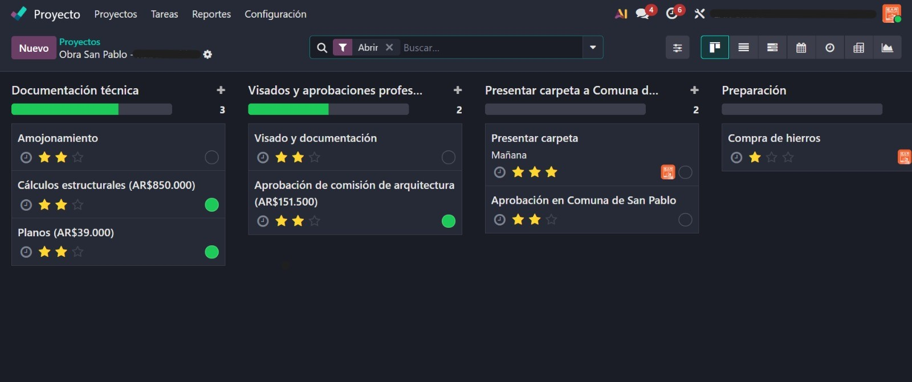

Empresa de construcción · Sistema de gestión
Implementación integral de Odoo
Implementé Odoo para una empresa de construcción, reuniendo en un mismo lugar la gestión comercial, operativa y de proyectos.
Alcance
- Configuración y adaptación de los módulos necesarios para el trabajo diario.
- Organización de proyectos, tareas, documentación, aprobaciones, compras y seguimiento comercial.
- Definición de etapas y vistas para saber rápidamente en qué estado está cada proceso.
Ejemplo: seguimiento de obra
Dentro de la implementación, configuré el módulo de Proyectos para seguir una obra desde la documentación técnica y las aprobaciones hasta la preparación de compras.

Una de las vistas configuradas dentro de la implementación.